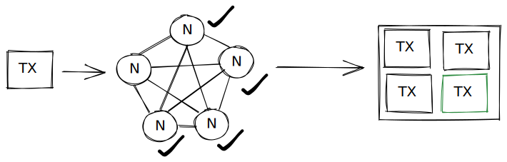
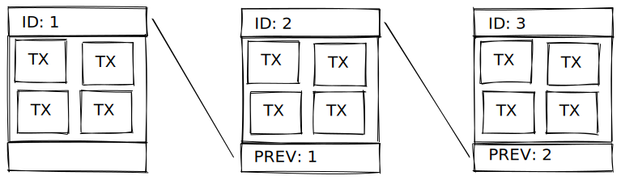

Introducción
La tecnología de blockchain o cadena de bloques en castellano fue descrita por primera vez en 1991 pero no fue hasta dos décadas después que se utilizo por primera vez en el mundo real.
Cuando hablamos de blockchain hablamos principalmente de una base de datos que esta distribuida en una red de conformada por muchas computadoras a estas computadoras normalmente se les llama nodos. Justamente esto es una de las principales características y beneficios de las blockchain, su descentralización, quiere decir que muchas computadoras al rededor del mundo tengan esta base de datos y que no haya una sola computadora o empresa que sea la responsable/dueña de esta base de datos.
Transacciones
En blockchain una transacción(denominadas Tx) es una operación entre dos partes que va a quedar registrada en la red de forma inmutable lo que quiere decir es que una vez que es aceptada nada va a poder cambiarla o eliminarla.
El contenido de las transacciones depende un poco de la red, hay algunas que solo permiten transacciones de “activos” (criptomonedas) por ejemplo venta/compra y otras que hasta permiten la subida de archivos digitales o texto.
Normalmente las transacciones son enviadas por usuarios a la red, los nodos de la red validan o rechazan la transacción por distintos tipos de algoritmos de conceso (mas adelante hablaremos de esto) osea, todos los nodos o la mayoría (depende de la red) se ponen de acuerdo sobre la validez de la transacción, y si es aceptada queda guardada en un bloque que almacena varias transacciones.

Bloques
Como mencionamos anteriormente un bloque esta compuesto por varias transacciones ya aceptadas por los nodos, una vez que el bloque se “completa” de transacciones este pasa a ser guardado en la “base de datos”, la otra parte que tenemos que destacar de un bloque es que este va a tener un hash que lo identifique y también va a almacenar el hash del bloque anterior, para así situarlo en la línea temporal y con este vincular los bloques uno con otros, de acá viene la denominación “cadena de bloques” o blockchain.

Nodos
La ultima parte importante que nos falta por conocer son los nodos. Los nodos son computadoras interconectadas entre ellas y que forman la red, operan de la misma forma y con las mismas reglas, pueden comunicarse entre ellos y compartir información, y son los encargados de orquestar la información que llega a la red para el correcto funcionamiento de la misma.
Hay distintos tipos de nodos, algunos solo se encargan de validar las transacciones, otros de guardar la información completa de toda la base de datos y otros denominados “ligeros” solo guardan parte de la información.